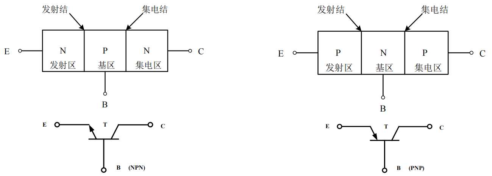
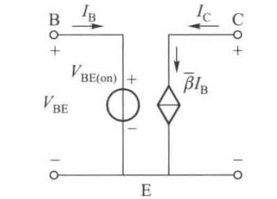
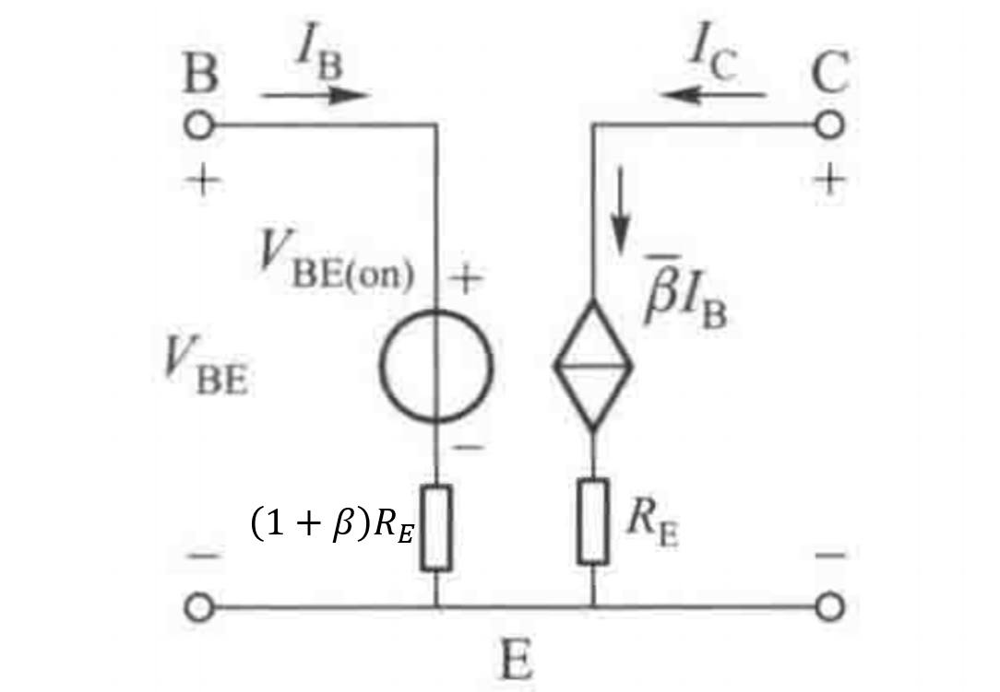
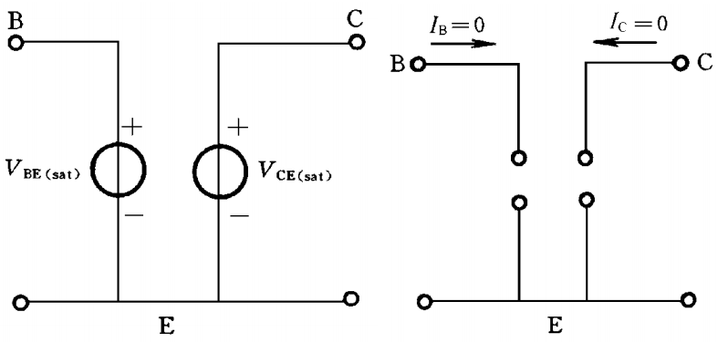
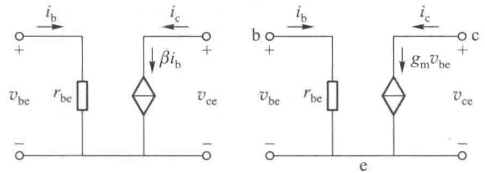
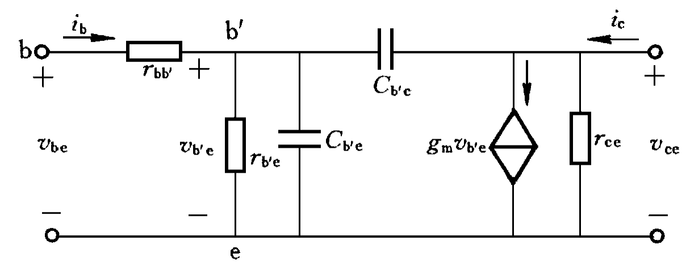
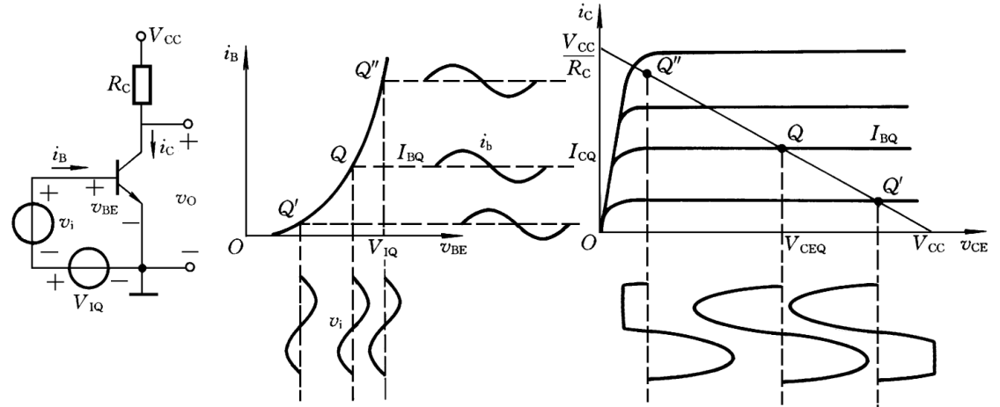
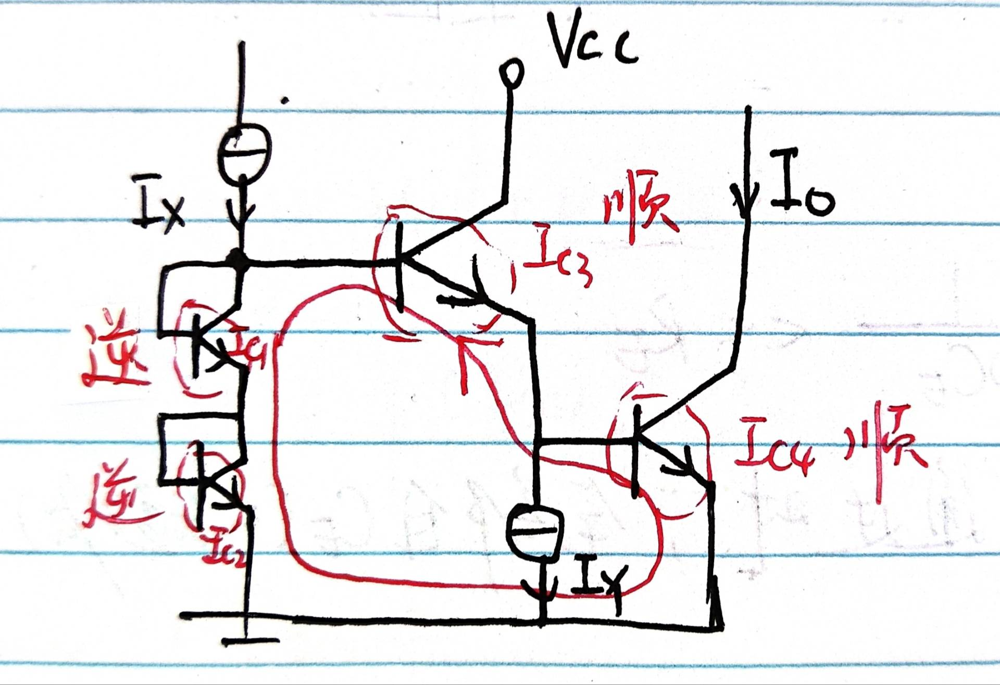

第二章 晶体三极管
I. 三极管的工作原理
- 两种类型的三极管:

- 三极管中箭头的方向即为正偏电流流向.
- 载流子类型: C, E极是多子, B极是少子.
- 工作状态:
- 放大模式: 发射结正偏, 集电结反偏.
- 饱和模式: 发射结, 集电结均正偏.
- 截止模式: 发射结, 集电结均反偏.
- 判断方法: 求出 vBC,vBE.
- 一般认为 VBE(on)=0.7V, VBC(on)=0.4V.
- 在计算中, 一般先使用放大模式进行计算. 随后, 若 vCE<VCE(sat)=0.3V, 认为进入截止模式.
- 工作参数:
- α: 共基极电流放大系数. 小于1, 但一般距1很近.
- β=1−αα: 电流放大系数. 量级在10~100.
- IC=βIB, IE=(1+β)IB.
II. 三极管模型
注: 所有的模型基于NPN管讨论. 对于PNP管, 方向全部相反.
艾伯尔斯-莫斯模型
- 适用于各种工作模式.
- 一种指数模型. 在放大模式下:
- IE=IEBSeVTVBE.
- IC=IseVTVBE.
- 由 IC, 三极管此时可看作压控电流源.
大信号电路模型
- 放大模式: IC=IseVTVBE, IB=βIseVTVBE.
- BE压降: VBE(on), 一般取0.7V.
- 电路图:

- 如果E极连接电阻, 做如下等效:
- 若 (1+β)RE≫RB, 则直接有 IC≈REVBB−VBE(on).
- 若不满足上述近似关系, 则需要对 RE 进行折算. 得到等效电路如下:

- RE 的作用: 减少温度对三极管特性的影响.
- 饱和与截止模式:

- 在实际计算时, 先假设BJT工作在放大模式, 随后用计算得到的 vCE 与 VCE(sat) 比较.
小信号电路模型
- 仅适用于放大模式, 由be结电阻与电流源组成.
- be结电阻: rbe=IBQVT.
- 跨导: gm=rbeβ=VTICQ.
- 电流源可以看作 i=βib 的CCCS或 i=gmvbe 的VCCS.
- 电路图:

- 考虑基极电阻时, 令 rbe=rbb′+rb′e.
伏安特性曲线
三极管频率特性
- 考虑结电容后, 可得 π 型等效网络:

- 单极点系统, β(ω)=1+(ω/ωβ)2β.
- ωβ=rb′eCb′e1. 3dB点频率. β(ωβ)=0.707β.
- ωT=βωβ. 特征频率. β(ωT)=1.
- ω≫ωβ 时, β(ω)≈ωβωβ.
III. 三极管的应用
- 电流源: 在放大区, 三极管的电流与其两端电压无关.
- 放大器: 详见第4章.
- 偏置电路: 输出端连接上拉电阻的情况下, 有 vCE=Vcc−iCRC.
- vCE 偏高: 输出曲线上半周被削, 截止失真. (所谓截止, 指 ic=0, 就如被截断一般)
- vCE 偏低: 输出曲线下半周被削, 饱和失真. (所谓饱和, 指 vCE<vCE(sat), BJT进入了饱和区)

- 跨导线性环: 将所有三极管之间的BE结相连成环. 则在这个环线中, 有: 顺∏iCk=λ逆∏iCk.
- 所谓顺, 逆, 指的是环线方向与BE结正向是否相同.
- λ=∏逆Sk∏顺Sk, 称为面积因子.
- 在三极管参数相同时, 顺∏iCk==逆∏iCk. 根据此表达式, 可以形成电流平方电路, 电流乘积电路等多样的电路.

- TTL电路: 利用三极管形成的门电路.
下一章: 场效应管